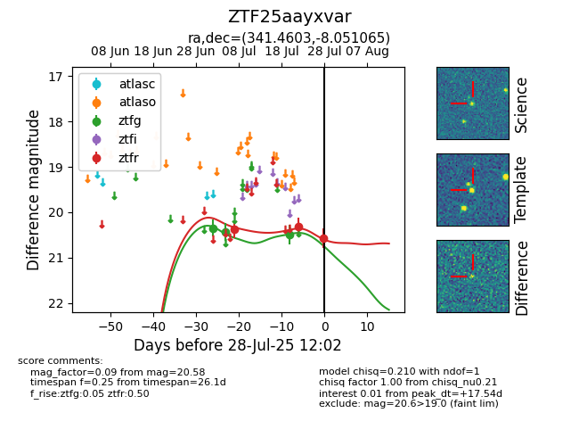

Target ZTF25aayxvar at 2025-07-28 12:02, see:
FINK: fink-portal.org/ZTF25aayxvar
Lasair: lasair-ztf.lsst.ac.uk/objects/ZTF25aayxvar
ALeRCE: alerce.online/object/ZTF25aayxvar
alt names
ZTF25aayxvar (ztf,fink)
coordinates:
equatorial (ra, dec) = (341.4603,-8.05107)
galactic (l, b) = (59.7447,-54.68960)
photometry
last ztfg=20.49, ztfr=20.58
3 ztfg, 3 ztfr detections
